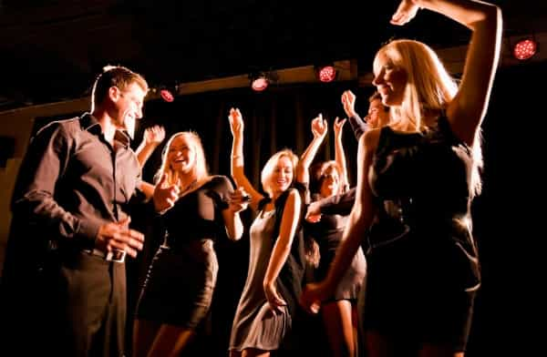

Nascimento is an ambitious young man with a large focus on self-improvement and discovery. His favorite topics include women, health and fitness, and masculinity. Check out his blog: Power Your Twenties. He is also on Twitter.


I love to drink. Maybe not as much as your typical Friday night out crew, but I enjoy it. But if I am out to game, I will almost always choose doing it sober. I want to narrow down the pros and cons of you drinking when it comes to game:
I’d take the pros over the cons for drinking. Besides, these cons aren’t really a factor unless you drink too much. Now, the pros and cons of you staying sober:
Those are pretty much the basics. I’d like to discuss the more in-depth differences between being sober and drinking while out, as some of it cannot be explained by simple bullets. First, let us start with the topic of state.
When you drink, your night always starts on a high. Your state is amplified by the alcohol. You are on top of the world. You don’t have to be drunk and falling over to achieve this, and often enough a few drinks are enough to reach this sweet spot. Problem is, there is nowhere to go but down. Throughout the course of the night, your state will slowly start to decrease. Drinking throughout the night can slow this process, but the decline is inevitable.
When you are sober, it is the opposite. You start on a low. With experience out sober, you become accustomed to it so that it is not a detriment. Inevitably, with the night starting out and approaches occurring, you start to increase your state. You build social momentum. At the end of the night, you are on a high, and potentially even more so than the high you get from being drunk.
That is not to say you can’t build momentum while drinking. Although I believe it has the potential to be stronger when you are sober. I am not saying because of your decline in state you will have a hard time pulling a girl at the end of the night either. However, I believe you have greater potential if you are on a high sober state, as opposed to a drunk state.
Some people say you are either an introvert, or an extrovert. Some say that you can be somewhere in the middle. I say create another option; you could be all of the above.
I was always classified as a more introverted person. When I drank, I became more social, bringing out the extraverted side to me. I had the potential to become life of the party with the right amount of booze. But never sober.
When I was out at night, I would become more social and witty around girls. Extraverted traits are necessary in night-time environments when it comes to cold approaching. And this is no surprise, as drinking exposes the extraverted side to you. But if you are an introvert, and find you can only be more extraverted when you are drunk, then you are relying on alcohol to meet people and be social.
This can be changed. That extrovert side to you? You don’t need alcohol to become it. In fact, its interesting by taking a perspective where you can learn from your ‘drunk self’. Personally, I would reflect on how I would act drunk, socially. If I was talking louder and with more confidence, if I was more direct with my touching without any drawbacks, if I was less hesitant in the split second before an approach, and so forth.
I started doing these things sober. It was challenging at first, but I learned to calibrate. If I can act that way drunk, I can act the same way sober. Eventually, I found it just flowed naturally in the right environment. You learn to become high energy.
By doing this, you unlock the extraverted side to you, without requiring alcohol. You learn that you can be introverted or extraverted, depending on your mood and situation. Contrast that with someone who is always ‘introverted’ and when they go out they can’t stand that they must drink just so they are able to talk to attractive strangers.

Now for what I believe is the most important part of sober game. When I first started going out and getting my first kisses and make outs and slight successes, I loved it. However, I was always drunk. I felt like alcohol was my crutch. And truth is, for many guys, if not most, it is.
I wanted to be able to do the same thing, sober. Being able to make out with a girl I just met minutes ago sober was a challenge for me already. After a tough learning curve in getting used to the night environment sober, I eventually accomplished that goal. Then, I imagined myself pulling and getting a one night stand. I had never had one before, and if I could do it sober, I would be proud of myself. Once I did that, I felt a very strong high after my achievement.
Which brings me to my next point, inner game. I believe attaining success with women without requiring alcohol, and being in a sober state builds deep confidence. Not the type you choose to exhibit, or are aware of. Ever since I started to become really comfortable going out sober, I’ve had more people respond to me. Guys avoid eye contact and look down, girls show more interest and shyness. Also have had some very direct compliments from girls I had not been accustomed to:
‘I figured out why I’m so awkward around you. You’re so confident with yourself it is intimidating.’
On the other hand, success with women while drunk builds drunk confidence. A buddy of mine is great with girls. He doesn’t get needy, teases, escalates, and shows some ‘natural’ qualities. Problem is, he can only do this drunk. When he is sober, or only one or two drinks in, he is like a scared rabbit. This doesn’t mean everyone only has drunk confidence, but this is widely the case. Roosh has mentioned the following before in his book Day Bang:
“The average man will die before doing a cold approach while sober.”
I also wanted to feel in the same state all the time. If I was out during the day on my university campus in between studying and lecture and I saw an attractive girl sitting by herself reading a book on a bench, I wanted to know I could do well, because I do great in the exact same state at just a different time of day. It’s not as difficult to integrate day approaches into your life when you approach at night in the same state you are in all the time.
To conclude, I want to make it clear that I don’t have any hate against drinking on nights out. I still do the occasional night where I’ll drink and rip the fun benefits that alcohol brings. But I do appreciate doing nights out sober. I know many of you can have great nights out while drunk, and can pull successfully at the end of the night.
Game is game.
But I definitely encourage giving sober game a try. Even if it means only to learn how it affects your state. Or how much you can learn about your drunk self. And maybe see how it affects you internally. At worst you’ll save some money and maybe a hangover in the morning.
Read More: Sales vs. Game